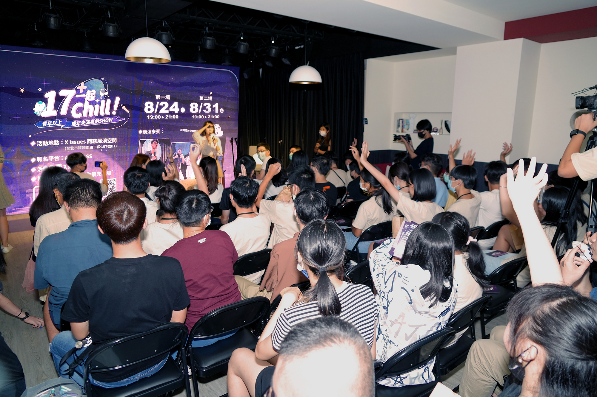
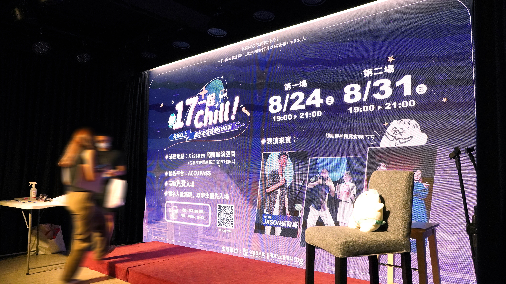

17+ 一起 Chill
青年政治參與推廣活動視覺識別系統設計

專案背景 ｜青年公共參與的全新溝通方式
「17+一起 Chill」是台灣民眾黨國家治理學院推動的青年公共參與實驗， 以尚未取得投票權的青年族群作為主要溝通對象。 活動結合喜劇表演、動漫文化與網路世代熟悉的語言， 嘗試降低政治議題的距離感， 讓公共事務不再侷限於嚴肅討論， 而能以更自然的方式進入青年生活。
專案策略 ｜以青年文化重塑政治活動形象
- 降低參與門檻： 以娛樂活動包裝公共議題， 減少傳統政治宣傳的距離感。
- 青年文化導向： 融合動漫、喜劇與網路迷因元素， 建立符合 Z 世代閱讀習慣的視覺語言。
- 一致化視覺系統： 建立主視覺、社群素材與現場輸出規範， 提升活動辨識度與傳播效率。
創意亮點 ｜青年世代的視覺語言轉譯
- 次文化視覺融合： 結合漫畫分鏡、網路文化與娛樂符號， 建立具有青年感的活動識別。
- 高辨識度字體設計： 透過粗體字與撞色配置， 提升遠距離閱讀與活動宣傳效果。
- 模組化應用系統： 同一套設計可延伸至海報、 社群貼文、舞台背板與活動物料。

專案成果 ｜建立青年導向的公共參與品牌形象
本專案成功建立活動整體視覺識別系統， 並應用於實體活動現場、社群宣傳與數位媒體曝光。 透過年輕化的視覺策略， 將公共議題轉化為更容易接觸與理解的內容， 提升活動關注度與青年參與意願。